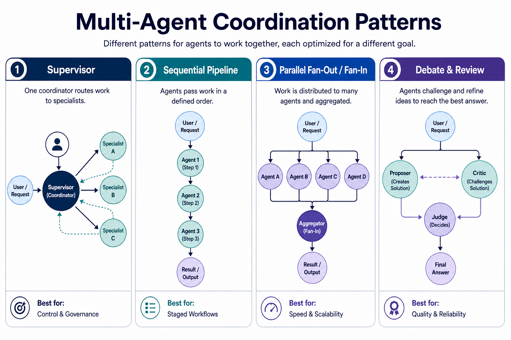
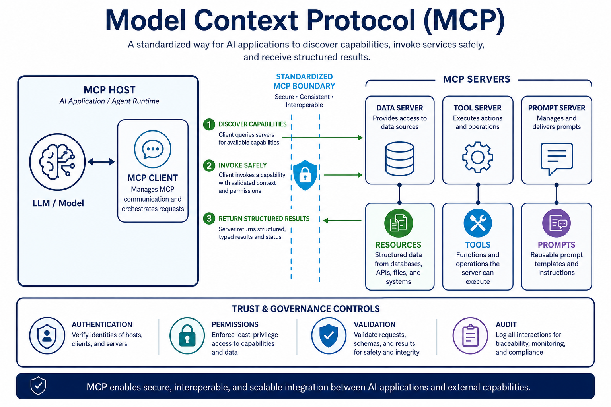
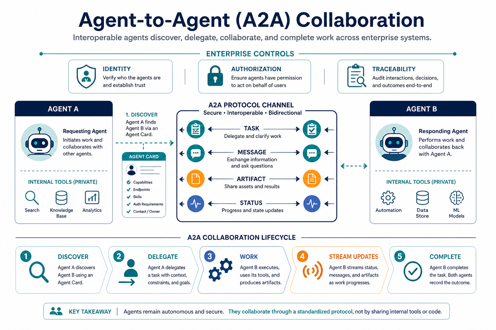
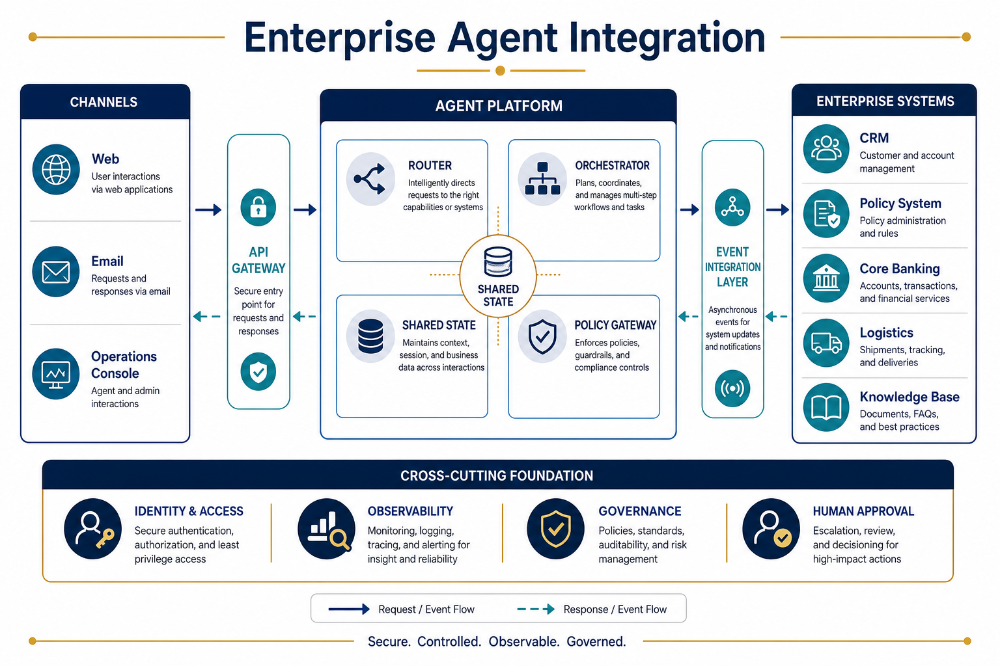
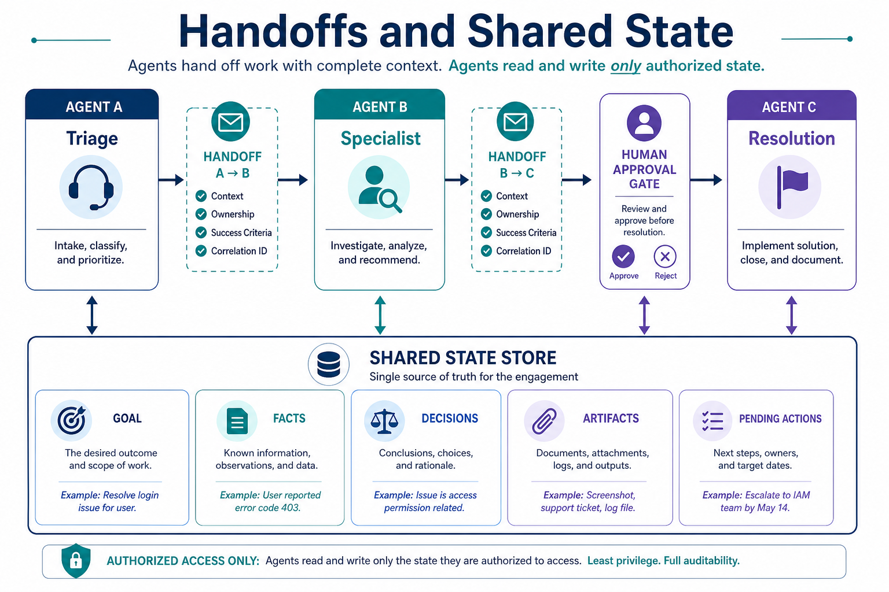
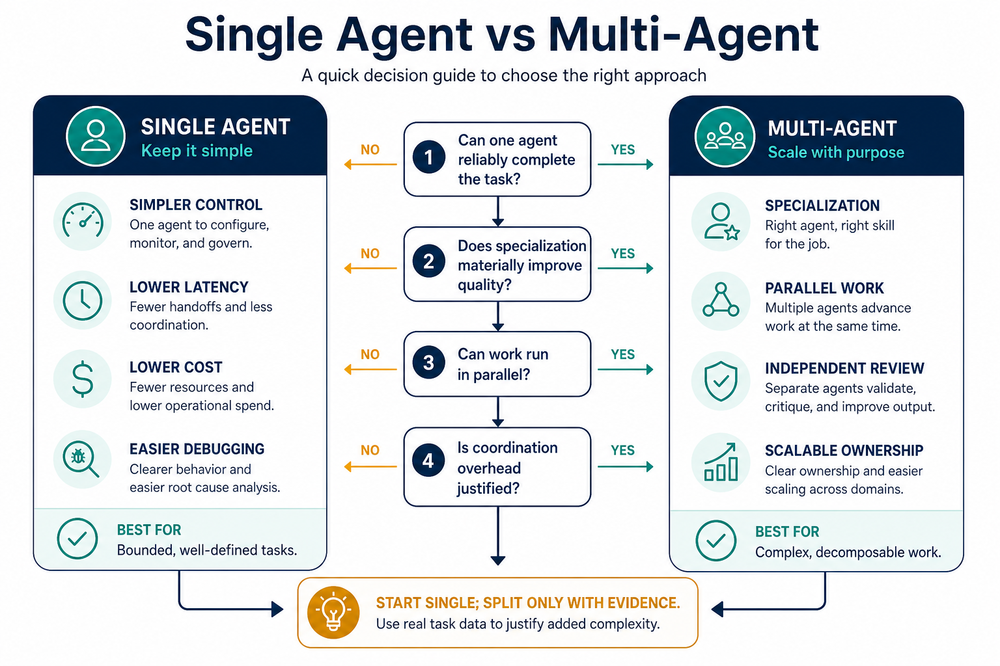

Bridge (16:00–16:05)
conda activate ai_agent_env
python -c "import python_a2a; print('python-a2a ok')"
python -c "import boto3; print('boto3 ok')"Topic 01 · Multi-agent patterns
Concept. Supervisor/worker has one coordinator delegating to specialist workers and synthesizing their results. Role-based crews (yesterday's CrewAI scaffold) chain named roles sequentially. Critique/debate has two agents iterating — one proposes, one challenges — until they converge or hit a budget. All three multiply cost and context versus a single agent; Opus 4.8 caps workflows at 1,000 sub-agents specifically because unbounded sub-agent sprawl risks runaway cost and out-of-memory failures, not just slowness.
- Why sprawl is a real risk, not a hypothetical. Each sub-agent can itself spawn more, and each one holds its own context — a shallow-looking task can balloon into hundreds of parallel branches if nothing bounds fan-out.
- Supervisor/worker vs. role crews — the practical difference. Supervisor/worker suits dynamic delegation (the supervisor decides who does what based on the specific case). A role crew suits a known, fixed pipeline of named steps — less flexible, more predictable.

Instructor drives live, variation A — supervisor/worker via real subagents. Claude Code chat panel — this is exactly yesterday's Topic 03 subagent mechanism, applied to coordination now:
Act as supervisor: dispatch two subagents in parallel on claim CLM-748422
(row CLN-002) — one subagent researching the policy grounding (using
data/insurance/policies/), one subagent researching claim history/status
(using claims.db). Then synthesize both reports into one coverage
decision yourself.Instructor drives live, variation B — critique/debate, for contrast.
Dispatch a subagent to propose a coverage decision for claim CLM-597471.
Then dispatch a second subagent whose only job is to critique that
proposal against the actual policy documents and flag anything
unsupported. Show me both reports, then tell me your final decision.Learners repeat. Pick one more claim and decide, before running anything, which pattern fits it better and why. Note your reasoning for the showcase.
Topic 02 · MCP, in depth
Concept. MCP has three roles: the host application (Claude Code), an MCP client inside it, and one or more MCP servers exposing tools. Yesterday's servers were in-process (stdio) — a subprocess Claude Code launches itself, no port. Today's is a network server over Streamable HTTP — a standalone process with a real port, potentially remote. The registry has 10,000+ community servers across 200+ implementations; once servers are remote, auth/SSO and gateways become real concerns, not optional extras.
- Why the transport choice matters operationally. An in-process server dies when Claude Code's session ends and can only ever be reached by that one session. A network server keeps running independently, can serve multiple clients, and could live on a different machine entirely — but now needs its own auth story.
- What changes in the config. A stdio server entry in
.mcp.jsongives acommand/argsto launch. A network server entry gives aurlto connect to instead — no process for Claude Code to launch, just a client connection.

Build it together, variation A — start the network server. VS Code terminal (separate tab) — have Claude Code build this fresh, using yesterday's stdio tool as the starting point to adapt, or start from the reference:
Build a network MCP server (FastMCP, streamable-http transport, host
127.0.0.1, port 8766, streamable_http_path "/mcp") named claims-network,
exposing get_claim_and_policy the same way yesterday's insurance-lookup
tool did, but as a standalone network service instead of stdio. Put it at
W2D2/my_claims_network_server.py.Start it in its own terminal tab (it needs to keep running):
uv run python W2D2/my_claims_network_server.pyReference implementation (only if the build gets stuck)
A tested version is at snippets/claims_network_server.py (verified: responds 200 to a real MCP initialize handshake on http://127.0.0.1:8766/mcp).
Verify it's actually running. Confirm the server answers for a real claim — this catches a crashed or never-started server early, and it's the check you'll reuse in "Learners repeat" and later this afternoon:
Using a quick MCP client script (or a raw HTTP request against the
Streamable HTTP endpoint), connect to http://127.0.0.1:8766/mcp and call
get_claim_and_policy for CLM-424063. Show me the raw response.Expected response for CLM-424063: claim_status: "open", product: "homeowners", grounding_available: true, policy_doc_files: ["POL-HOME-010_flood_rider.md", "POL-HOME-010_water.md"]. A connection error here means the server isn't actually listening — check its terminal tab for a crash before continuing.
Build it together, variation B — connect to a real MCP server already hosted on the web. Everything so far was a server you built and started yourself. Most real MCP usage instead means pointing at a server someone else runs — no code to write, no process to keep alive. Try Anthropic's own hosted Claude Code documentation server, which needs no authentication (in a terminal, not inside a claude session):
claude mcp add --transport http claude-code-docs https://code.claude.com/docs/mcpCheck it connected:
claude mcp listYou should see claude-code-docs listed as ✔ Connected. This registers the server to you only, for this project (the default "local" scope, stored in ~/.claude.json) — it doesn't write to .mcp.json at all, unlike a project-scoped server would. Then, in a Claude Code session, ask it to use the new tool:
Use the claude-code-docs server to look up what MCP_TIMEOUT does.Naming the server in the prompt guarantees the answer comes from this MCP tool rather than Claude's built-in knowledge or a web fetch — the tool call in Claude's output will be labeled claude-code-docs. Approve the permission prompt the first time it asks to use the new tool. Optional cleanup once you're done: claude mcp remove claude-code-docs — every connected server's tool list stays loaded in each session's context, so remove ones you're not actively using.
Learners repeat. Two quick repeats: rerun the earlier raw-client verification prompt against your own claims-network server, this time for a claim with the commercial_package product (the ungrounded one), and confirm grounding_available is still correctly false — the transport changed, the contract didn't. Then ask claude-code-docs one more question of your own about Claude Code, and check the tool-call label to confirm it actually came from the MCP server rather than Claude's memory.
Topic 03 · Agent-to-Agent (A2A)
Concept. An Agent Card is a JSON document describing an agent's identity, capabilities, skills, and auth — published at a well-known URL for discovery. A client agent fetches the card, then calls a skill through a task lifecycle (submit, poll/stream, get result). ACP, an earlier competing protocol, has since merged into A2A under the Linux Foundation. MCP is agent → tool; A2A is agent → agent — a full multi-agent system typically needs both.
- Why a card, not just a URL. The card tells a caller what the agent can do and how to authenticate before any call is made — discovery and capability negotiation up front, not trial and error.
- Claude Code isn't itself an A2A speaker. Unlike MCP (which Claude Code connects to natively), A2A calls happen through a Python client script Claude Code runs via its Bash tool — a realistic pattern, since most orchestration code talks A2A this way too.

Build it together, variation A — stand up the A2A server. VS Code terminal (separate tab):
Build an A2A server using python_a2a (A2AServer, AgentCard, AgentSkill,
run_server) named claims-status-agent, exposing a skill check_claim_status
that looks up a claim_id's status/route_queue in data/insurance/claims.db.
Run it on 127.0.0.1:5055. Put it at
W2D2/my_a2a_claims_server.py.Start it in its own terminal, then fetch its card directly to confirm discovery works:
uv run python W2D2/my_a2a_claims_server.py
# in a second terminal:
curl http://127.0.0.1:5055/.well-known/agent.jsonReference implementation (only if the build gets stuck)
A tested version is at snippets/a2a_claims_server.py — verified end-to-end: card discoverable, and client.ask("What is the status of CLM-424063?") correctly returns CLM-424063: status=open, route_queue=fnol_intake.
Build it together, variation B — have Claude Code act as the client, for contrast with topic 02's native MCP connection.
Write a short Python client script using python_a2a.A2AClient that
connects to http://127.0.0.1:5055, asks "What is the status of
CLM-748422?", and prints the response. Run it via Bash and show me the
result.Learners repeat. Ask the A2A server about a claim through the client script yourself, then deliberately ask about a claim_id that doesn't exist and confirm the agent's reply degrades sensibly rather than erroring out unhandled.
Topic 04 · Enterprise integration
Concept. Real enterprises expose CRM/ERP/ticketing systems (Salesforce Agentforce, ServiceNow, SAP) to agents via MCP the same way you exposed claims.db — the tool is the trust boundary. Managed agent runtimes (Bedrock AgentCore, Vertex AI Agent Builder, Azure AI Foundry/Microsoft Foundry, Anthropic Managed Agents) are deployment/control-plane services, conceptually distinct from the inference call you're about to make.
- The trust boundary is the tool code, never the model's opinion. Whatever the model says it wants to do, the actual authorization decision has to be enforced in deterministic code at the boundary — exactly the pattern in the reference Bedrock script you're about to run.

AWS setup Amazon Bedrock — API keys (the current, simplest path)
Current as of July 2026. Amazon Bedrock API keys (launched July 2025) are now the simplest auth path — a single bearer-token string, not a three-part access-key/secret/session-token set. Model access approval for most Anthropic models is now near-instant (submit a one-sentence use case in the console, approved in under a minute) rather than a multi-day review.
1. Confirm model access (AWS Bedrock console, in your AWS sandbox browser)
- Sign in to the AWS sandbox console with your provided login. Confirm the region selector reads US East (N. Virginia) / us-east-1.
- Go to Bedrock → Model catalog, find the Anthropic Claude model your trainer specifies (e.g.
anthropic.claude-sonnet-4-6), and confirm/request access — a one-line use case like "AI-assisted claims triage for a training exercise" is enough.
2. Generate a Bedrock API key (same console)
- In the Bedrock console left nav, select API keys.
- Choose the Long-term API keys tab (short-term keys expire with your console session — fine too, but long-term is easier for a multi-hour workshop) → Generate long-term API keys → set a short expiration (a few hours is plenty) → generate.
- Copy the key value immediately — it's shown once.
3. Move the key to the VM
The AWS sandbox and the VM are separate machines with no shared clipboard. In the same AWS sandbox browser tab: open syncclip.in, paste the key, note the sync code. Then, on the VM, open syncclip.in in its own browser, enter the same code, and retrieve the key.
4. Set it in the VM terminal (hidden prompt, never a file)
read -rsp "Bedrock API key: " AWS_BEARER_TOKEN_BEDROCK; echo
export AWS_BEARER_TOKEN_BEDROCK
export AWS_REGION=us-east-1
export BEDROCK_MODEL_ID="<exact trainer-approved model ID>"5. Run the one bounded call
uv run python W2D2/snippets/bedrock_claim_classifier.py CLM-424063Success prints the claim, the model's one-word urgency classification, and a deterministic (non-model) authorization decision. Do not loop this call.
Clean up
unset AWS_BEARER_TOKEN_BEDROCK AWS_REGION BEDROCK_MODEL_IDThen delete the syncclip.in note, and if you generated a long-term key, revoke/let it expire rather than reusing it in a later session. Full sandbox constraints (4-hour lifetime, region lock, no resource provisioning) and troubleshooting: VM-Clouds/_AWS_SANDBOX_SETUP.html — it documents this exact API-key flow.
Do this, variation A — the classification call. Run the command from step 5 above on CLM-424063 (low reserve amount) and read the output together.
Do this, variation B — trigger the escalation path, for contrast. Run it again on CLM-255335 (the $423,312 commercial_package claim):
uv run python W2D2/snippets/bedrock_claim_classifier.py CLM-255335CLM-424063's decision should come straight from the model's urgency classification. CLM-255335's reserve amount exceeds the deterministic threshold in code — it should escalate to a human regardless of what the model says. That's the trust-boundary concept made concrete: the model advises, code decides.
Learners repeat. Pick one more claim and predict, before running it, whether the deterministic gate or the model's classification will end up driving the decision — then run it and check. Optional stretch: point your Day 2 AM crew_scaffold.py's CrewAI agents at this same Bedrock model (CrewAI supports a Bedrock-backed LLM config) and run .kickoff() for real, closing yesterday's structure-only loop.
Topic 05 · Handoffs & shared state
Concept. A handoff should carry exactly what the receiving agent needs — provenance, the relevant facts — and nothing else. Leaking a full conversation history or private scratch reasoning into a handoff is both a context-bloat problem and, for anything sensitive, a real information-boundary problem.
- A good handoff is a typed contract, not a context dump. The same discipline as Day 1's tool-output schemas applies here: define exactly what crosses the boundary.

Instructor drives live, variation A — a clean handoff. Claude Code chat panel:
Dispatch a subagent to research claim CLM-597471's coverage, but brief it
with ONLY the claim_id and the specific question — nothing else about our
earlier conversation today. Show me exactly what handoff payload it
received.Instructor drives live, variation B — a leaky handoff, for contrast.
Now dispatch a subagent for the same task, but this time tell it "here's
our full conversation so far, use whatever's relevant" instead of a
specific brief. Compare the size and content of what it received against
variation A.Learners repeat. Write a one-line rule for what a handoff brief should always include and always exclude, based on what you just saw.
Topic 06 · Single vs. multi-agent
Concept. Everything today has a cost: more context, more coordination, more places to fail. The right default is a single agent; multi-agent earns its place only when a task genuinely benefits from context isolation (Day 2 AM Topic 03) or real parallelism (today's Topic 01) — not by default "because it sounds more sophisticated."

Do this, variation A — single-agent baseline. Claude Code chat panel — time it:
Resolve claim CLM-748422 yourself, end to end, without dispatching any
subagent.Do this, variation B — the multi-agent version, for comparison. Re-run Topic 01's supervisor/worker pattern on the same claim and compare wall-clock time and turn count against variation A.
Learners repeat. State, in one sentence, the specific condition under which you'd reach for multi-agent on this project going forward.
App build (19:00–19:30) · Day 2 of the progressive insurance app
This slot extends yesterday's seed pipeline, resolve_email(email_id), with today's concepts rather than replacing it: today you split the single Day 1 agent into a triage/grounding handoff — Bedrock-or-stub urgency classification through a deterministic authorization gate (Topic 04's trust boundary), then an independent re-confirmation of grounding through the network-MCP server (Topic 02) and A2A agent (Topic 03) you already stood up this afternoon.
my_day2_resolve.py on top of your Day 1 file~18 minDirect Claude Code to build your own new file — do not overwrite anything under app/:
Create app/my_day2_resolve.py, importing resolve_email from my own
app/my_day1_resolve.py (yesterday's file) rather than rewriting it. Wrap it
in a new resolve_email(email_id: str) that:
1. Calls yesterday's resolve_email first, unchanged, to get the claim_id
and grounding result.
2. If a claim_id was found, classify its urgency: if AWS_BEARER_TOKEN_BEDROCK
and BEDROCK_MODEL_ID are BOTH set in the environment, make exactly one
Bedrock Converse call classifying LOW/MEDIUM/HIGH from the claim's
loss_type and reserve_usd, and record urgency_source="bedrock". If
either is missing, fall back to a clearly-labeled deterministic stub
(e.g. reserve_usd thresholds) and record urgency_source="stub-no-credentials"
-- either path is fine, we're proving the pipeline shape, not requiring
live AWS access.
3. Run that urgency through a deterministic authorization gate that I write
in plain code -- the model's label only ever informs the decision, code
decides the action. Same trust boundary as this afternoon's Topic 04.
4. Independently re-confirm the claim is grounded by calling, in-process,
the plain lookup functions behind the network-MCP server and the A2A
server I built this afternoon (Topics 02/03) -- a second, separate check,
not a second walk through step 1's own lookup path.
5. Return everything from step 1 plus model_urgency, urgency_source,
authorization_decision, network_grounding_check, and a2a_status_check.
Run it: uv run python -m app.my_day2_resolve CLN-001The pipeline above calls the network-MCP and A2A lookup logic in-process for speed — but the real network/A2A exercise is those two servers answering over an actual port. Restart your own two servers from this afternoon in separate terminals (or the verified app/ equivalents, same ports):
uv run python -m app.claims_network # Streamable HTTP MCP, http://127.0.0.1:8766/mcp
uv run python -m app.claims_a2a # A2A agent, http://127.0.0.1:5055/.well-known/agent.jsonThen, in a third terminal or back in Claude Code chat, confirm both round trips for real:
Confirm the claims-network MCP server answers a real initialize handshake
at http://127.0.0.1:8766/mcp, then fetch the A2A agent card at
http://127.0.0.1:5055/.well-known/agent.json and use an A2AClient to ask
it "What is the status of CLM-424063?". Show me the raw replies from both.uv run python -m app.day2_resolve CLN-001 adds, on top of yesterday's fields: "urgency_source": "stub-no-credentials" and "model_urgency": "LOW" (verified in an environment with no AWS credentials set — expect "bedrock" instead if you completed Topic 04's setup), "authorization_decision": "route_to_standard_queue", a populated network_grounding_check object, and "a2a_status_check": "CLM-424063: status=open, route_queue=fnol_intake". The MCP initialize handshake at http://127.0.0.1:8766/mcp and the A2A card + .ask() round trip above are both real, verified responses, not mocked. One honest nuance worth a minute of discussion, not a bug to fix: the stub heuristic classifies CLM-424063 as LOW purely from its reserve_usd ($5,834), while the claim's own ground-truth urgency field in claims.db says HIGH — it's a vandalism/police-report case, and a dollar-only rule has no way to see that. That gap is exactly the case for live Bedrock (or a human) in the loop instead of a naive threshold.
Reference implementation (only if the build gets stuck)
A complete, tested version is at app/day2_resolve.py (the orchestration), app/bedrock_urgency.py (Bedrock-or-stub urgency and the authorization gate), app/claims_network.py, and app/claims_a2a.py (the standalone network/A2A servers) — verified against CLN-001 / CLM-424063 exactly as above. Use it to compare after you've built your own, not as the first attempt. Day 3's PM app-build slot picks up from here and adds real RAG grounding, a semantic cache, and a fraud signal.
Logistics thread — homework
Extend the network server to logistics
Add a second network MCP server (or a second tool on the same one), get_order_and_shipment_network, exposing yesterday's logistics lookup over Streamable HTTP the same way you did for insurance today. Confirm it responds correctly for ORD-3007 (the ungrounded air-freight case) before W2D3 AM.